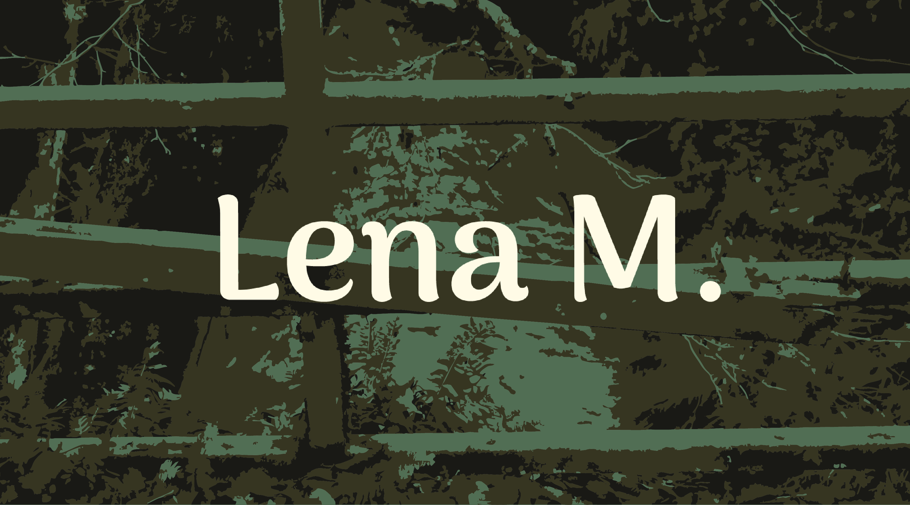
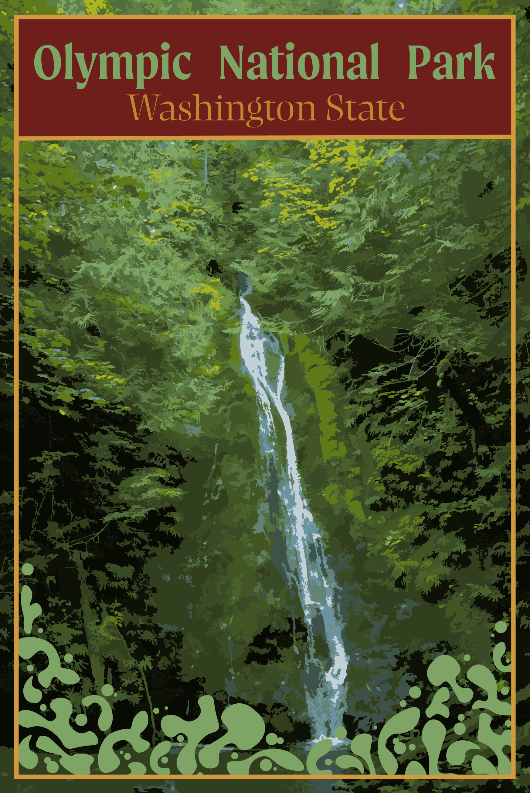

About Me:
I'm a sophomore in college with a passion for graphic design and all things creative. I love bringing ideas to life through design, blending art with innovation to create unique, impactful visuals. Always eager to learn and explore new techniques, I'm excited to continue growing in the world of design.
For this project, I designed a Swiss-style typographic poster for an academic lecture using a blue and white color palette. The layout was based on an 8-column grid to create a clear visual hierarchy. I focused on minimalism, incorporating geometric shapes and abstract lines, with no imagery. The poster includes the title, date, time, location, and a brief synopsis of an event, while ensuring legibility and a balanced design.

For this project, I designed a travel poster for Olympic National Park using Adobe Illustrator. I utilized the Image Trace feature to create an illustration of a waterfall, bringing the park's natural beauty to life in a stylized form. To enhance the composition, I added organic shapes as details, reflecting the park's lush landscapes. The design focuses on a clean visual hierarchy, ensuring that the waterfall illustration remains the focal point while complementing the poster's overall aesthetic.

For this project, I designed a responsive, multi-page website focused on the history of Grunge Graphic Design. The site covers influential artists like David Carson and Art Chantry, showcasing their impact on the design movement. I created a user-friendly layout, starting with a sitemap and wireframes to ensure a clear, functional design across both desktop and mobile views. The website features a gallery of iconic works, along with informative content about the evolution of grunge design. I used semantic HTML and media queries for a responsive experience, ensuring the site adapted seamlessly to different screen sizes. The design incorporates a custom wordmark logo and images carefully selected to illustrate key moments in the grunge movement.
Go back to the top